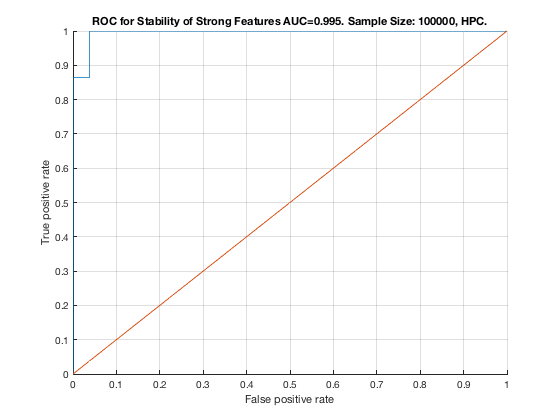

TieNet. Sample Size: 100000. HPC.
unit_stability_type(100000, 1, "TieNet")
Table 12. Stability by Type. Sample Size: 100000, HPC.
_______________________________________________________
SELECTED COUNTS: Strong=22, Weak=23, Irrelevant=3
TOTAL COUNTS: Strong=23, Weak=26, Irrelevant=4
Feature_Number Stability Type Path_Length N_MBS Equivalence
______________ _________ ____________ ___________ _____ ___________
20 ' 0.606 ' ' STRONG ' 3 0 18
23 ' 0.560 ' ' STRONG ' 3 0 21
6 ' 0.466 ' ' STRONG ' 3 0 1
17 ' 0.440 ' ' STRONG ' 4 0 12
11 ' 0.382 ' ' STRONG ' 4 1 7
22 ' 0.282 ' ' STRONG ' 2 2 21
19 ' 0.268 ' ' STRONG ' 2 4 18
5 ' 0.242 ' ' STRONG ' 3 8 1
10 ' 0.200 ' ' STRONG ' 4 16 7
16 ' 0.168 ' ' STRONG ' 2 32 12
21 ' 0.158 ' ' STRONG ' 1 48 21
9 ' 0.128 ' ' STRONG ' 3 72 7
15 ' 0.128 ' ' STRONG ' 3 108 12
18 ' 0.126 ' ' STRONG ' 1 162 18
14 ' 0.124 ' ' STRONG ' 3 216 12
4 ' 0.114 ' ' STRONG ' 4 324 1
8 ' 0.114 ' ' STRONG ' 2 432 7
3 ' 0.102 ' ' STRONG ' 4 576 1
7 ' 0.090 ' ' STRONG ' 1 720 7
39 ' 0.080 ' ' weak ' 4 720 39
2 ' 0.076 ' ' STRONG ' 2 900 1
13 ' 0.072 ' ' STRONG ' 2 1125 12
12 ' 0.062 ' ' STRONG ' 1 1350 12
51 ' 0.026 ' ' weak ' 4 1350 51
34 ' 0.024 ' ' weak ' 8 1350 34
25 ' 0.022 ' ' weak ' 6 1350 25
41 ' 0.022 ' ' weak ' 3 1350 41
49 ' 0.022 ' ' weak ' 6 1350 49
40 ' 0.020 ' ' weak ' 3 1350 40
42 ' 0.020 ' 'irrelevant' Inf 1350 42
47 ' 0.018 ' 'irrelevant' Inf 1350 47
28 ' 0.016 ' ' weak ' 5 1350 28
52 ' 0.014 ' ' weak ' 4 1350 52
46 ' 0.012 ' ' weak ' 7 1350 46
27 ' 0.010 ' ' weak ' 6 1350 27
36 ' 0.008 ' ' weak ' 8 1350 36
43 ' 0.008 ' 'irrelevant' Inf 1350 43
24 ' 0.006 ' ' weak ' 4 1350 24
38 ' 0.006 ' ' weak ' 5 1350 38
50 ' 0.006 ' ' weak ' 5 1350 50
26 ' 0.004 ' ' weak ' 5 1350 26
30 ' 0.004 ' ' weak ' 10 1350 30
31 ' 0.004 ' ' weak ' 9 1350 31
35 ' 0.004 ' ' weak ' 7 1350 35
37 ' 0.004 ' ' weak ' 6 1350 37
48 ' 0.004 ' ' weak ' 6 1350 48
29 ' 0.002 ' ' weak ' 11 1350 29
45 ' 0.002 ' ' weak ' 7 1350 45
Figure 12. ROC for Stability of Strong Features AUC=0.995. Sample Size: 100000, HPC.
_____________________________________________________________________________________
